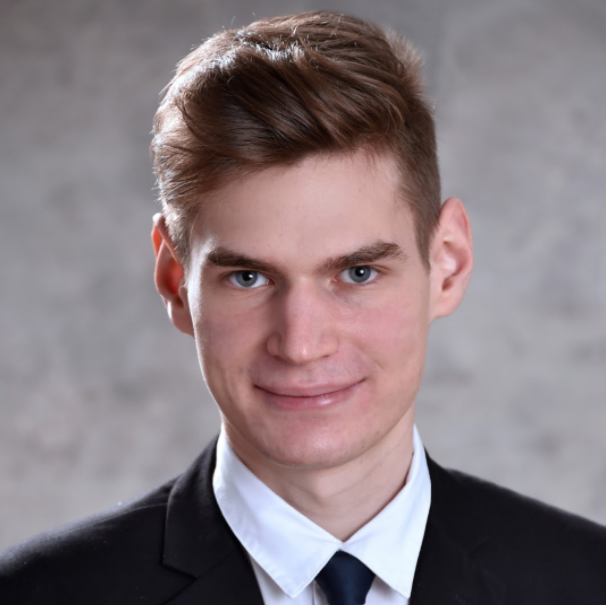
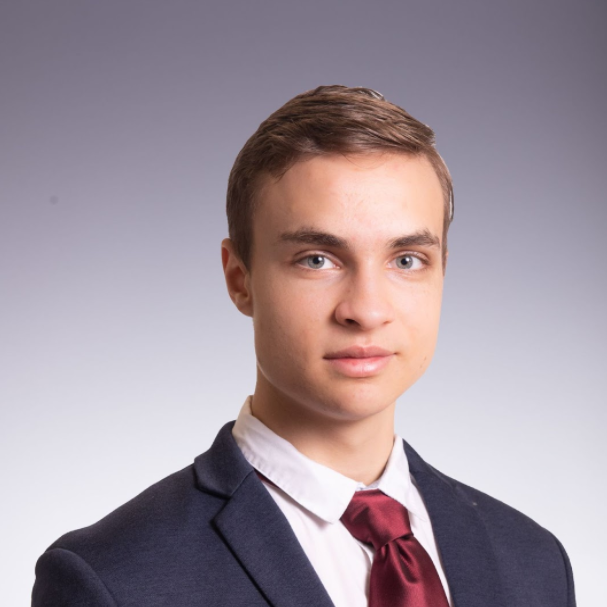

Hervay Bence
 I am a computer science student at the University of Cambridge, and I joined Alphacademy in the final year of my high school studies. I attended the mathematics branch of Budapest's Fazekas Mihály Gymnasium, where I spent 6 years deeply engaged in mathematics (National Olympiad in Informatics - 12th place), computer science (National Olympiad in Informatics - 13th and 14th place), and physics (National Physics Olympiad - 1st and 7th place). The combination of these three subjects helped me excel in various robotics competitions, with my favorite being the 2017 First Global Challenge, a robotics building and programming world championship that we won, leading to an invitation to the White House by the President's family. I also practiced acrobatic basketball as a member of FaceTeam for five years, and I regularly played volleyball and basketball. Currently, I am competitively playing ultimate frisbee.
I am a computer science student at the University of Cambridge, and I joined Alphacademy in the final year of my high school studies. I attended the mathematics branch of Budapest's Fazekas Mihály Gymnasium, where I spent 6 years deeply engaged in mathematics (National Olympiad in Informatics - 12th place), computer science (National Olympiad in Informatics - 13th and 14th place), and physics (National Physics Olympiad - 1st and 7th place). The combination of these three subjects helped me excel in various robotics competitions, with my favorite being the 2017 First Global Challenge, a robotics building and programming world championship that we won, leading to an invitation to the White House by the President's family. I also practiced acrobatic basketball as a member of FaceTeam for five years, and I regularly played volleyball and basketball. Currently, I am competitively playing ultimate frisbee.
Reimann Kristóf
 Tizenkettedikes diák vagyok a Budapesti Fazekas Mihály Gimnázium speciális matematika tagozatán.
Szabadidőm nagy részét matematikával, fizikával, és informatikával töltöm. A tanulásba beleölt idő
versenyeredményeimen is meglátszik, többek között a Nemes Tihamér Programozási Versenyen, és az OKTV-n
voltam döntős. A “matekos” tárgyak mellett sokat foglalkozom filozófiával, közgazdaságtannal, és
történelemmel is. Amikor viszont nem tanulok, akkor futok, edzek, zongorázom, vagy olvasok. Tehetséges
fiatal diákok tanításával már lassan egy éve foglalkozom. Rendkívül fontosnak gondolom, hogy azt az
odaadó, magas színvonalú mentorálást amit én Lacitól, Ágostontól, és a középiskolai tanáraimtól kaptam,
továbbadjam az engem követő generációknak.
Tizenkettedikes diák vagyok a Budapesti Fazekas Mihály Gimnázium speciális matematika tagozatán.
Szabadidőm nagy részét matematikával, fizikával, és informatikával töltöm. A tanulásba beleölt idő
versenyeredményeimen is meglátszik, többek között a Nemes Tihamér Programozási Versenyen, és az OKTV-n
voltam döntős. A “matekos” tárgyak mellett sokat foglalkozom filozófiával, közgazdaságtannal, és
történelemmel is. Amikor viszont nem tanulok, akkor futok, edzek, zongorázom, vagy olvasok. Tehetséges
fiatal diákok tanításával már lassan egy éve foglalkozom. Rendkívül fontosnak gondolom, hogy azt az
odaadó, magas színvonalú mentorálást amit én Lacitól, Ágostontól, és a középiskolai tanáraimtól kaptam,
továbbadjam az engem követő generációknak.
Szabó Kornél György
 Szabó Kornél vagyok, a Cambridge-i Egyetem informatika szakos hallgatója.
Középiskolás tanulmányaimat a Budapesti Fazekas Mihály Gyakorló Általános Iskola és Gimnázium speciális matematika tagozatán végeztem. Ezen évek alatt sokat foglalkoztam versenyprogramozással és matematikaversenyekkel, a Nemzetközi Informatikai Diákolimpián bronzérmes, a Közép-Európai Informatikai Diákolimpián bronzérmes, a Nemzetközi Matematikai Diákolimpián bronzérmes, a Közép-Európai Matematikai Diákolimpián ezüstérmes lettem.
Magyar versenyeken is sikeresen szerepeltem, informatika OKTV-n 2., matematika OKTV-n 10. helyezett lettem. Gimnáziumi éveim végén kezdtem az Alphacademyben tanítani, de korábban is foglalkoztam tehetséggondozással, például a Pósa-táborokban történő segítősködéseim alkalmával. Hobbijaim közé tartozik az olvasás, az evezés és a falmászás.
Vári-Kakas Andor
 Vári-Kakas Andor vagyok, a Cambridge-i Egyetem harmadéves informatika szakos hallgatója.
Középiskolás tanulmányaimat a Budapesti Fazekas Mihály Gyakorló Általános Iskola és Gimnázium speciális
matematika tagozatán végeztem. Ezen évek alatt sokat foglalkoztam versenyprogramozással és
matematikaversenyekkel: országos bajnoka vagyok a Zrínyi Ilona matematikaversenyek, a Bolyai Matematika
csapatversenynek, illetve a Nemes Tihamér programozásversenynek. Az egyetemen másodévben második helyet
értem el az évfolyamon. A tanítás már régóta érdekel; ismerőseimet már 4 éve készítem fel versenyekre,
érettségire, illetve dolgozatokra, és másfél éve csatlakoztam az Alphacademyhez.
Érdekességnek említeném, hogy bronzérmet szereztem a Nemzetközi Nyelvészeti Diákolimpián Prágában.
Lételemem a sportolás (pl. futsal, ultimate frisbee, asztalitenisz), elhivatott vagyok a sportolás
fontosságával kapcsolatban a szellemi tevékenységek kiegészítése végett.
Várkonyi Zsombor
Várkonyi Zsombor vagyok, az Eötvös Loránd Tudományegyetem elsőéves matematika szakos hallgatója. Középiskolás éveimben a Budapesti Fazekas speciális matematika tagozatára jártam, itt is érettségiztem 2021-ben. A matematika mellett mindig is érdekelt a programozás, azonban komolyabb versenyeken matekból voltam. Hazai versenyek közül az OKTV 3. kategóriájában 5. és 2. lettem, emellett képviseltem az országot a Közép-Európai Matematikai Olimpián (MEMO), ahol aranyérmet nyertem és a Nemzetközi Matematikai Diákolimpián (IMO), ahol ezüstöt. Nagyon szeretek tanítani, már 5 éve vagyok matektáborok önkéntes szervezője, az Alphacademy-hez 2021 elején csatlakoztam. Szabadidőmben általában sportolni, olvasni, kirándulni vagy a barátaimmal társasjátékozni szoktam.
Albert Márton
Tavaly végeztem a Budapesti Fazekas matek tagozatán, most pedig az ELTE elsőéves matek szakos hallgatója vagyok. A matematikán kívül a programozást is nagyon szeretem, mellyel középiskolás éveim alatt ismerkedtem meg, és azóta is sokat foglalkozom vele szabadidőmben. Nagyon szeretek csapatban dolgozni különféle projekteken, ilyen jellegű versenyeken szoktam is indulni (World Robot Olympiad 5. hely, Ericsson Programozó Bajnokság 2. hely), valamint számos egyéni projektem is van. Legjobban a játéktervezés és -fejlesztés érdekel, ami a különféle stratégiai játékok iránti érdeklődésemből fakad. Sportolni is szeretek, szoktam biciklizni, futni és falat mászni.
Csertán András
Csertán András vagyok, az ELTE harmadéves programtervező informatikus hallgatója. Középiskolás koromban sokat versenyeztem informatikából és matematikából, legjobb eredményem egy OKTV 5. hely. Az egyetem mellett részt veszek a Nemes Tihamér és az OKTV programozás feladatok, valamint az informatikai diákolimpiai válogatóverseny feladatainak összeállításában. Ezen kívül tagja voltam a 2020. évi Középeurópai Informatikai Diákolimpia tudományos bizottságának.
Középiskolás éveim végén felmerült bennem a tanári pálya lehetősége is, ugyanakkor ezt végül elvetettem, így nagyon örültem Ágoston megkeresésének, hogy nincs-e kedvem okos gyerekeket programozásra tanítani. Emellett egyébként az egyetemen is tartok elsőéveseknek gyakorlatot programozásból és nagyon érdekes látni a két tanítási forma közti különbségeket.
Gujgiczer Anna
 Gujgiczer Anna vagyok, a BME-n szereztem mérnökinformatikus szakon a BSc. és MSc. diplomámat is.
Jelenleg az egyetem Számítástudományi és Információelméleti Tanszékén vagyok doktorandusz, ahol
gráfelméleti témám van. Oktatással régóta foglalkozom. Először egy családi ismerősünket kezdtem el
korrepetálni és készítettem fel őt az érettségire. Majd az alapképzésem alatt egy másik programozó
iskolában tanítottam gyerekeket. A BME-n 5 éve tartok laborokat, gyakorlatokat és idéntől az ELTE-n is
tartok egy gyakorlatot. Valamint nemrég csatlakoztam a Medve Matek egyesületbe is, ahol nyáron egy
5.-6.-os csoportot taníthattam.
Gujgiczer Anna vagyok, a BME-n szereztem mérnökinformatikus szakon a BSc. és MSc. diplomámat is.
Jelenleg az egyetem Számítástudományi és Információelméleti Tanszékén vagyok doktorandusz, ahol
gráfelméleti témám van. Oktatással régóta foglalkozom. Először egy családi ismerősünket kezdtem el
korrepetálni és készítettem fel őt az érettségire. Majd az alapképzésem alatt egy másik programozó
iskolában tanítottam gyerekeket. A BME-n 5 éve tartok laborokat, gyakorlatokat és idéntől az ELTE-n is
tartok egy gyakorlatot. Valamint nemrég csatlakoztam a Medve Matek egyesületbe is, ahol nyáron egy
5.-6.-os csoportot taníthattam.
A szabadidőmet leginkább sportolással töltöm. Főként a futás szerelmese vagyok, nem riadok vissza egy-egy hosszabb távtól sem. Ezenkívül pár éve elkezdtem zenét tanulni. Úgy gondolom, hogy mindkettő fontos része az életemnek a matek és az infó mellett.
Horváth Balázs
Tavaly nyárig a Budapesti Fazekas Mihály Gimnázium matematika tagozatán tanultam, most az ELTE elsőéves hallgatója vagyok. A matematika, informatika mellett a filozófia iránt is nagyon érdeklődöm (OKTV 11. és 25. helyezés; Olimpiai válogató 3. helyezés, BSPEE esszéíróverseny különdíj). Az Alphacademy-hez egy éve csatlakoztam, remélem a konkrét feladatok, ismeretek mellett a tanítványaimnak abból az élet minden területén hasznos logikus gondolkodásból, problémamegoldó képességből is át tudok adni valamit, amit a programozás, és általában a matematika jelent számomra.
Kovács Bertold
 Hollandiában, a TU Delft Computer Science and Engineering szakán tanulok. A Budapesti Fazekas
matektagozatán kezdtem informatikából versenyezni (OKTV 21.) idén pedig delfti egyetemi csapatommal
bejutottam a Benelux Algorithm Programming Contest amszterdami döntőjébe. Nagyon érdekel a filozófia
is (OKTV 5.), a BSPEE nemzetközi esszéversenyen kölöndíjat nyertem. Szabadidőmben legszívesebben falat
mászom, vagy csúfos vereséget szenvedek a barátaimtól különböző társasokban.
Hollandiában, a TU Delft Computer Science and Engineering szakán tanulok. A Budapesti Fazekas
matektagozatán kezdtem informatikából versenyezni (OKTV 21.) idén pedig delfti egyetemi csapatommal
bejutottam a Benelux Algorithm Programming Contest amszterdami döntőjébe. Nagyon érdekel a filozófia
is (OKTV 5.), a BSPEE nemzetközi esszéversenyen kölöndíjat nyertem. Szabadidőmben legszívesebben falat
mászom, vagy csúfos vereséget szenvedek a barátaimtól különböző társasokban.
Mácsai Dániel
Az ELTE matematika szakos hallgatója vagyok. Gimnáziumi éveim alatt a szabadidőm jelentős részét matematikával, informatikával és fizikával töltöttem, mert érdekesnek és szórakoztatónak találtam ezeket a tárgyakat. Ennek eredménye is lett, OKTV döntőbe jutottam mindhárom tárgyból többször, matematikából 3. majd 1. helyezést sikerült elérnem - de a legfontosabbnak nem ezeket számokat/helyezéseket tartom, hanem azt, hogy csak azt csináltam, amihez kedvem volt. Ezen kívül az Országos Logo Versenyen 6. majd 1. helyezést értem el. Ha éppen nem a tanulmányaimmal foglalkoztam, akkor sportoltam, legjobban a falmászás és a szertorna érdekel. Nagyon szívesen továbbadom azt a szemléletet amit én kaptam: a felfedezésen és élményen alapuló tanulást.
Máté Lőrinc
 A Budapesti Fazekas Mihály Gyakorló Általános Iskola és Gimnázium 11.C speciális matematika tagozatos
diákja vagyok. A matek már első osztálytól érdekelt, programozással csak 7. osztálytól kezdtem el
foglalkozni. Szabadidőmben a matematika és az informatika mellett szívesen bridzsezek és olvasok. Két
évvel ezelőtt részt vettem az Európai Bridzs Bajnokságon és az idei évben a Közép-Európai Informatikai
Diákolimpián. Az országos versenyeken az elmúlt két évben mind a kétszer a 3. helyezést sikerült elérnem
a Nemes Tihamér Országos Középiskolai Számítástechnikai Tanulmányi Versenyen.
A Budapesti Fazekas Mihály Gyakorló Általános Iskola és Gimnázium 11.C speciális matematika tagozatos
diákja vagyok. A matek már első osztálytól érdekelt, programozással csak 7. osztálytól kezdtem el
foglalkozni. Szabadidőmben a matematika és az informatika mellett szívesen bridzsezek és olvasok. Két
évvel ezelőtt részt vettem az Európai Bridzs Bajnokságon és az idei évben a Közép-Európai Informatikai
Diákolimpián. Az országos versenyeken az elmúlt két évben mind a kétszer a 3. helyezést sikerült elérnem
a Nemes Tihamér Országos Középiskolai Számítástechnikai Tanulmányi Versenyen.
Országh Anna
Az ELTE matematika szakának elsőéves hallgatója vagyok, középiskolai tanulmányaimat a Budapesti Fazekas Mihály Gimnázium speciális matematika tagozatán végeztem. Az Alphacademyhez 2021. májusában csatlakoztam. Korábban is foglalkoztam már tanítással, többek között a Fazekas matematika tagozatára jelentkező diákoknak tartottam felvételire felkészítő szakkört. Nagyon szeretek gyerekekkel foglalkozni, és nekik új dolgokat tanítani. A matematika iránt kisgyermek korom óta érdeklődöm, és rendszeresen foglalkozom vele szabadidőmben. Remélem tanítványaimnak is ehhez hasonló "hobbijuk" lesz a programozás, melyet jól tudnak majd hasznosítani későbbi tanulmányaik során. Szeretném velük megszerettetni a programozást, és továbbadni azt a logikus gondolkodásmódot, amelyet én is kaptam tanáraimtól. Szabadidőm jelentős részét sportolással töltöm, járok terepfutni, falatmászni és túrázni. Ezekenkívül szeretek olvasni, utazni és sokat beszélgetni a barátaimmal.
Révész János
Révész János vagyok, harmadéves elméleti fizikus hallgató a londoni University College London egyetemen. Középiskolába a miskolci Földes Ferenc Gimnázium speciális matematika tagozatos osztályába jártam. Informatika irányába csak gimnázium végén kezdtem el komolyabban érdeklődni, végül a Magyar Tudományos Akadémia Gábor Dénes pályázatán 2. díjat kaptam a fény terjedését modellező pályamunkámért. Egyetemen kívül szívesen futok, zenélek vagy olvasok.
Tiszay Dávid
Középiskolai tanulmányaimat a Budapesti Fazekas Gimnáziumban végeztem speciális matematika tagozaton, jelenleg az ELTE programtervező informatikus szak elsőéves hallgatója vagyok. Érdeklődésem a matematika irányába hamar kibontakozott, tagja voltam a Pósa-tábor sorozatnak, ahol egyedi gondolkodásmódot tanultam, egyenesen Magyarország egyik legnagyobb matematikusától. Az évek során számos országos versenyen értem el helyezést (Varga Tamás Matematikaverseny 5., Bolyai Matematika Csapatverseny 4., Nemes Tihamér Programozóverseny 12.), továbbá részt vettem egy tanéven keresztül húzódó projekten, mely során egy eseményszervező messenger-bot megvalósítására törekedtünk. Már korábban is foglalkoztam tanítással, a speciális matematika tagozatra jelentkező diákoknak tartottam felkészítő szakkört, az Alphacademyben gimnáziumi éveim végén kezdtem el tanítani. Szabadidőmben sokat sportolok (országúti kerékpár, tenisz), illetve stratégiai társasjátékokat játszom mind online, mind offline formában.
Tóth Gellért
 Tóth Gellért vagyok a hollandiai Radboud University elsőéves hallgatója, Artificial Intelligence-t
tanulok. Az Óbudai Árpád Gimnázium matek szakán végeztem. Matematikából hatalmas sikereket nem értem el,
ez persze nem jelenti azt hogy, az emelt érettségi egy másodpercig is megakasztott volna, viszont mivel
a programozás mindig is jobban érdekelt az abba befektetett extra idő meghozta a gyümölcsét. A 2021-es
nemzetközi informatika diákolimpián és a 2020-as középeurópai informatika diákolimipán is ezüstérmes
lettem, magyar vonatkozásból pedig az OKTV 4. helyemre lehetek büszke, habár pont az kicsit csalódás
volt számomra.
Tóth Gellért vagyok a hollandiai Radboud University elsőéves hallgatója, Artificial Intelligence-t
tanulok. Az Óbudai Árpád Gimnázium matek szakán végeztem. Matematikából hatalmas sikereket nem értem el,
ez persze nem jelenti azt hogy, az emelt érettségi egy másodpercig is megakasztott volna, viszont mivel
a programozás mindig is jobban érdekelt az abba befektetett extra idő meghozta a gyümölcsét. A 2021-es
nemzetközi informatika diákolimpián és a 2020-as középeurópai informatika diákolimipán is ezüstérmes
lettem, magyar vonatkozásból pedig az OKTV 4. helyemre lehetek büszke, habár pont az kicsit csalódás
volt számomra.
A diákolimpia után keresett meg Ágoston, hogy szeretnék-e itt tanítani, de már korábban is voltak tanítással tapasztalataim. Mentoráltam vidéki diákokat matematikából és a saját sulimban egyik osztálytársammal infó szakkört vezettünk több kevesebb sikerrel.
Győrffi Ádám György
Az Eötvös Loránd Tudományegyetem elsőéves matematikus hallgatója vagyok, 2021-ben érettségiztem a miskolci Földes Ferenc Gimnázium speciális matematika tagozatán. Középiskolás koromban sok tanulmányi versenyen vettem részt, elsősorban matematikából, informatikából és fizikából. Ennek köszönhetően összesen 5-ször jutottam az Országos Középiskolai Tanulmányi verseny döntőjébe.
2021 áprilisa óta vagyok az Alphacademy tanára, emellett részt veszek a Dürer Matematikaverseny szervezésében, a Gondolkodás Öröme Alapítvány hétvégi matematikatáboraiban segédkezem és középiskolásokat készítek fel emelt szintű matematika érettségire.
Tompos Anna
Tompos Anna vagyok, az ELTE elsőéves matek-infó tanár szakos hallgatója. Középiskolás éveimet Zalaegerszegi Zrínyi Miklós Gimnáziumban töltöttem, ahol 2021-ben végeztem. Nagyon szeretem persze a matematikát (főleg az algebrát) és a programozást, azon belül is igazán azokat a programokat kedvelem, melyekkel kisebb gyerekekhez is közelebb lehet vinni ezt a varázslatos dolgot és játékosan lehet nekik megmutatni az alapokat. Ebből kifolyólag amit mindennél jobban szeretek, az az, ha másoknak továbbadhatok a lelkesedésemből e két terület iránt. Imádok tanítani és hihetetlenül motivált vagyok abban, hogy ezt a lehető legjobban csináljam, ezért is vagyok igazán hálás az Alphacademy-nek, amiért erre lehetőséget ad. Szabadidőmben nagyon szeretek a barátaimmal lenni, kirándulni, olvasni, zenét hallgatni, illetve sportolni (mostanában leginkább futni, röpizni vagy táncolni).
Viczián András
Tizenkettedikes diák vagyok a Baár-Madas református gimnáziumban. Még az első karantén idején fedeztem fel a programozást, algorithmizálást, és nagyon megszerettem. Azóta aktívan részt veszek online, és hivatalos versenyeken is. Legjobb eredményeim közé tartoznak: informatika OKTV 7. helyezés, Közép-Európai Diákolimpián (CEOI) 32. helyezés, és a Romanian Master of Informatics (RMI) versenyen bronzérem. Bár a versenyzés nagyon izgalmas is tud lenni, folyton örülök hogy eredménytől függetlenül, gondolkodhatok érdekes feladatokon. Szabadidőmben szeretek olvasni, falatmászni és túrázni a barátaimmal:)).
Makrai-Kis Balázs
A Veres Péter Gimnázium végzős diákja vagyok, már negyedikes koromban is nagyon szerettem a matekot, ezért is mentem ebbe az iskolába. Itt kezdtem el programozni is, komolyabban a Logo, Python és C++ nyelveket tanultam. Mindig is szerettem versenyezni, matekból az Arany Dániel versenyen szerzett 3. díjamra és a Bolyai csapatversenyen elért nemzetközi első helyemre vagyok a legbüszkébb. Az Országos Logo versenyt kétszer is megnyertem, illetve az elmúlt öt évben sikerült a legjobb 4 között maradnom. A Nemes Tihamér programozóversenyen pedig az országos 3. helyig jutottam. Úgy gondolom, hogy a programozás mindenkinek fontos és hasznos, viszont az iskolákban legtöbbször nem jut rá kellő idő, ezért igyekeztem mind önszorgalomból, mind Laci és Ágoston segítségével fejlődni. A kedvenc időtöltéseim közé tartozik a zenélés, több hangszeren is játszom, de talán az orgonát emelném ki.
Almási Nóra
Németországban, Karlsruhében tanulok a műszaki egyetem informatikus mesterképzésén, előtte pedig a BME-n végeztem mérnökinformatikus alapképzésen. Mind gimnázium, mind egyetem alatt számos matematika és programozói versenyen vettem részt. A Zrínyi Ilona matematikaversenyen mind a 10 évben bejutottam az országos döntőbe, informatika OKTV-n pedig 10. helyet értem el. Egyetem alatt háromszor kijutottunk az ACM-ICPC programozói csapatverseny közép-európai fordulójára. Egyetem mellett aktívan foglalkoztam oktatással is, az alapképzés alatt folyamatosan tartottam egyetemi gyakorlatokat, konzultációkat, nyáron pedig matematika táborokban oktattam. Szabadidőmben rengeteget sportolok, rendszeresen ultimate frizbizek és röplabdázok, de biciklizésre és falmászásra is bármikor vevő vagyok. Emellett a kreativitásom rajzolásban és sütés-főzésben élem ki, valamint szívesen dolgozok grafikus projekteken is.
Gubicza Milán
Tizenegyedik osztályos diák vagyok a Győri Jedlik Ányos Gépipari és Informatikai Technikumban, ahol szoftverfejlesztést és tesztelést tanulok. Tizenkét éves koromig a humán tantárgyak érdekeltek, több országos irodalmi versenyt, többek között szavaló versenyt nyertem. Tizenhárom évesen diáktársaimmal megnyertük a Veszprémi Szakképzési Centrum országos informatika versenyét, ahol az iskola modernizált, robotizált oktatási rendszerét terveztük meg. Azóta az informatika lett a fő érdeklődési köröm, kilencedik osztályban “Nagyinet” néven nyugdíjasokat oktattam informatikára. Itt tapasztaltam meg először, hogy mennyire jó érzés a saját tudásomat átadni másoknak. Emellett van egy videózással/fotózással foglalkozó vállalkozásom is, amivel sokat foglalkozom. Szabadidőmben kosárlabdázok és egyéb hobbi sportokat űzök.
Kollmann Bálint
Kollmann Bálint vagyok, a Magyar-Kínai Két Tanítási Nyelvű Általános Iskola és Gimnázium 11. osztályos tanulója. 7 éves korom óta tanulok kínaiul. Kínai nyelvből középfokú nyelvvizsgát tettem. 2018-ban Kínai Nagyköveti Ösztöndíjban részesültem.
Reál érdeklődésem már nagyon korán megmutatkozott, így elkezdtem sakkozni. Alsós koromban Akóts Gábor foglalkozott velem. Az ő ösztönzésére indultam el a budapesti sakkbajnokságon, ahol korosztályos döntős voltam.
Felsős koromban a sakk és a matematika mellett egyre jobban kezdett érdekelni az informatika, ami mára már szenvedélyemmé vált. Szabadidőm nagy részében programozom.
Nagyon szeretek versenyezni. Tavaly az Arany Dániel Matematikai Tanulóversenyen 2. helyezést értem el. Koromból adódóan ebben a tanévben nyílt először lehetőségem arra, hogy OKTV-n indulhassak. Matematikából és informatikából neveztem, valamint részt veszek a Nyelvészeti Diákolimpián is. Mindhárom verseny tart még. Informatikából döntőbe jutottam.